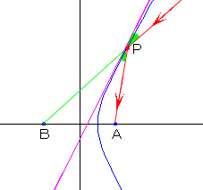
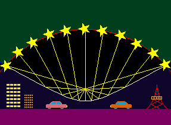

Reflective Properties of Hyperbolabola
Introduction
Rays directed toward the focus of hyperbola are reflected at the hyperbolic mirror to the other focus of hyperbola.

Using this property, we can create a mirror that collects star lights in the celestial sphere.

Applet
Press "Start" button.
Press "Beam" button to shoot the beams from the circle whose center point is point B to point B.
The hyperbola reflects the beams.
Press "+f" or "-f" to change the length AB..